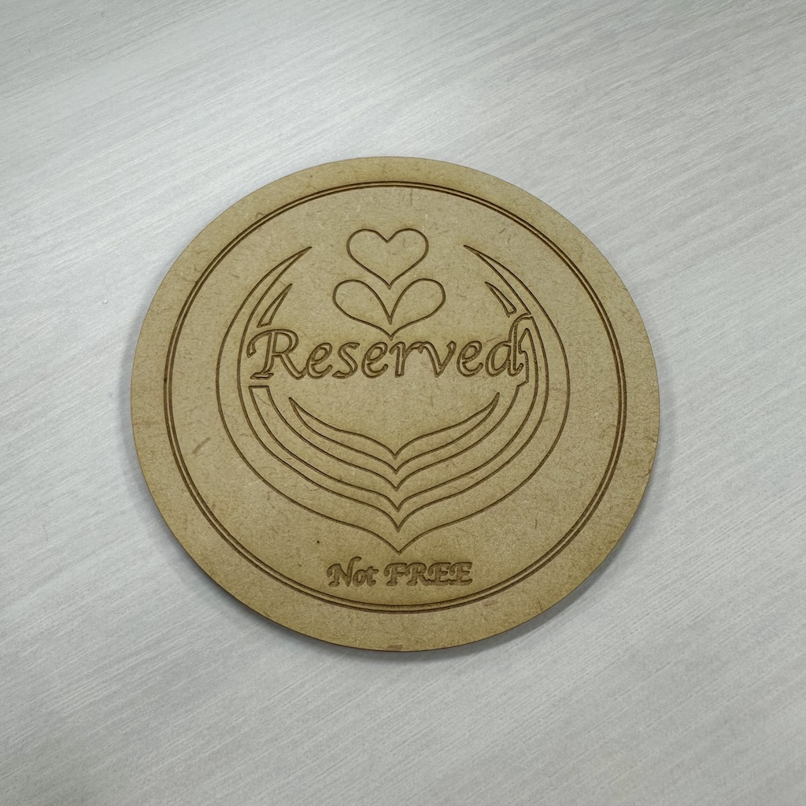
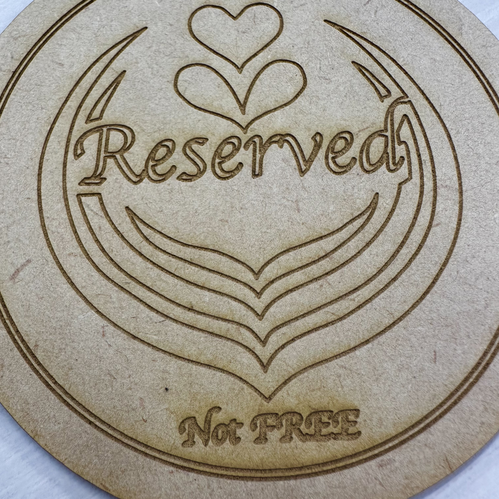

Design for others
Assignment No.3 Design for Others
日常の中の問題
私たちがテーマとした問題は、「座席確保問題」である。
カフェなどに行った際、服などで座席を確保するという行為は誰もが経験したことがあるだろう。
この行為は「日本人同士」なら通用するが、外国人には通用しない。
ましてや、外国に行った際に私物で座席を確保すると盗難などの可能性がある。
デザインを考える
何を制作するか考えた際にいくつか条件が出てきた。
①外国人にもわかりやすいようにイラストもしくは英語を使う
②日本人でもわかりやすいように簡単な英語を使う
③おしゃれなカフェにも馴染みやすいデザイン
これらを重視してデザインを考えていく。
デザイン完成
できたデザインが下の画像の通り

カフェなら置いてあるであろう
コースターをベースに作ることにした。
おしゃれな雰囲気にも馴染むように
「ラテアート」をイメージしたデザインにした。
また、使った英語も
「Not FREE」という簡単なもので、誰でもわかりやすいようにした。
完成
 
MDFボードと相性が良くて洒落た感じになった。かなり良い。
使用機器：レーザー加工機 材料：MDFボード 2.5mm
ほんとは裏面に「FREE」という文字を入れて空席アピールもできるようにしたかったが時間がなかった。
カフェで実際に使用している写真も時間があれば掲載する予定。
データ
班のメンバー
ニックネームを聞き忘れたから後日記載予定。